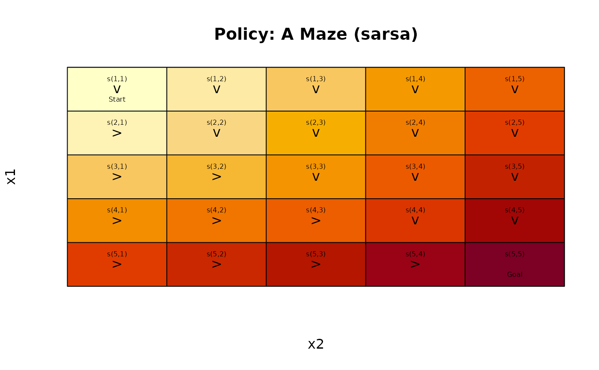
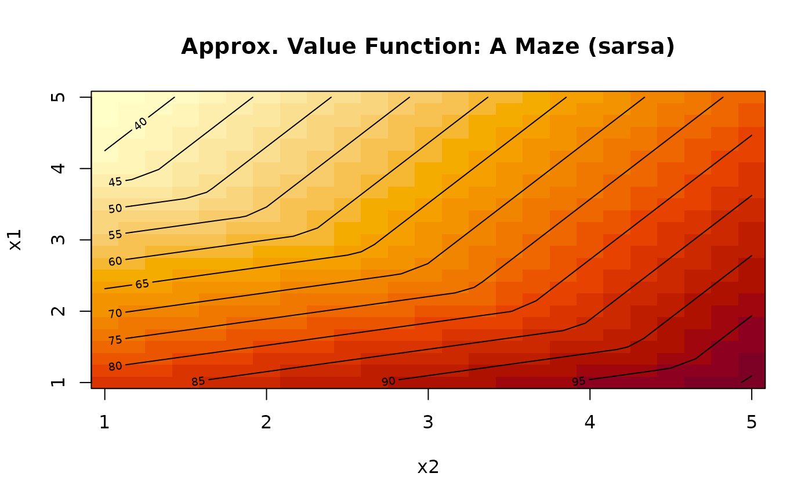
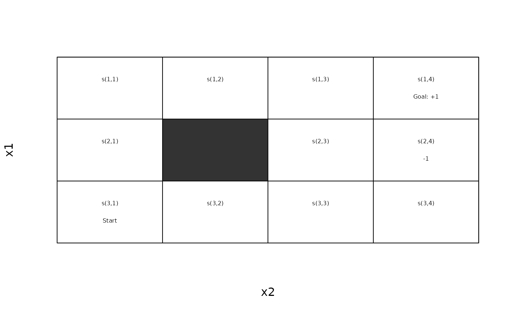
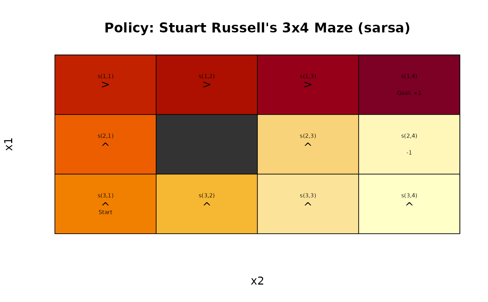
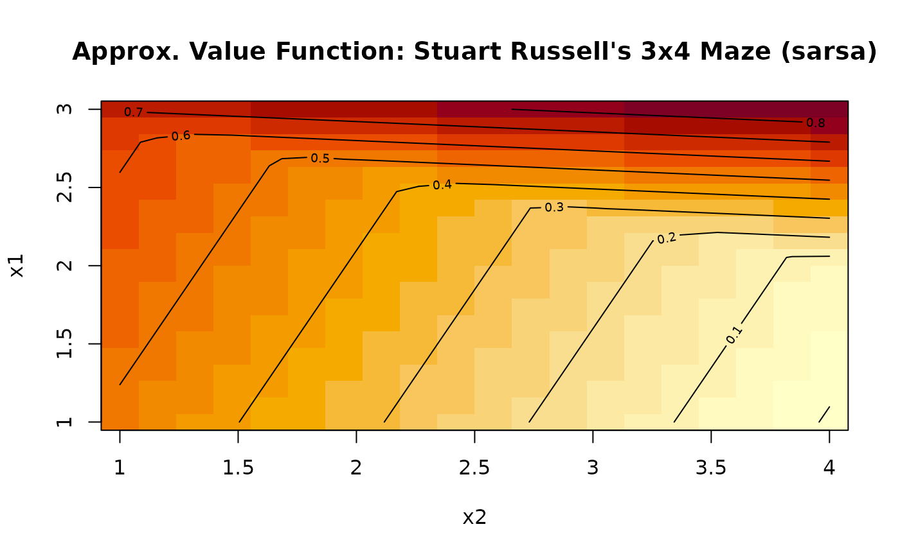
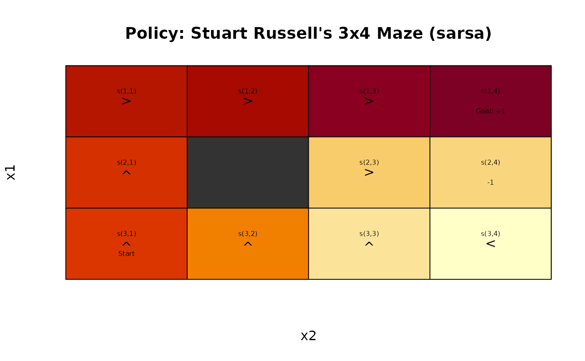
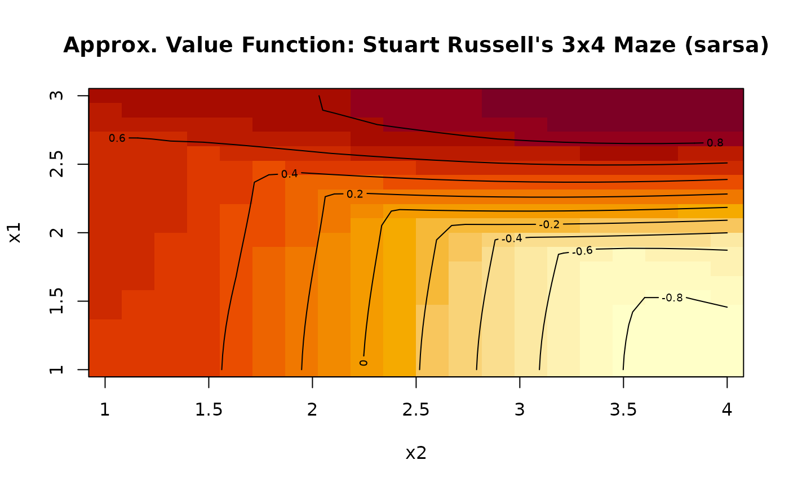
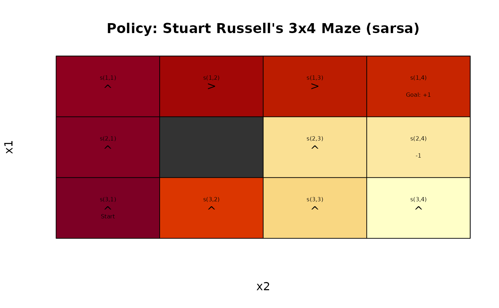
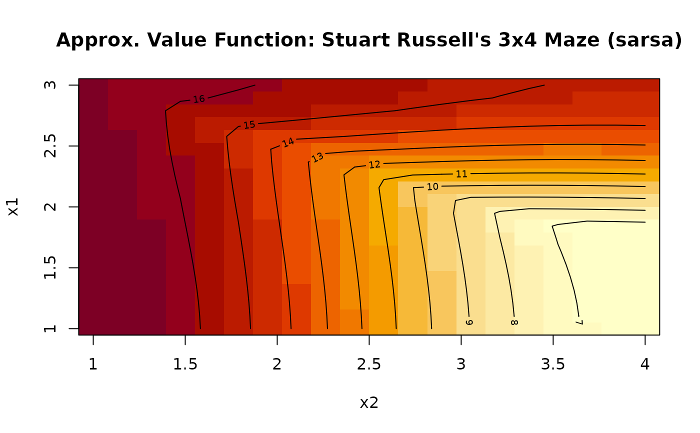

Solve MDPs with Temporal Differencing with Function Approximation
Source:R/solve_MDP_APPROX.R
solve_MDP_APPROX.RdSolve the MDP control problem using state-value approximation by semi-gradient Sarsa (temporal differencing) for episodic problems.
Usage
solve_MDP_APPROX(
model,
method = "sarsa",
horizon = NULL,
discount = NULL,
alpha = schedule_exp(0.2, 0.1),
epsilon = schedule_exp(1, 0.1),
lambda = 0,
n,
state_features = NULL,
transformation = transformation_linear_basis,
w = NULL,
...,
matrix = TRUE,
continue = FALSE,
progress = TRUE,
verbose = FALSE
)
approx_Q_value(model, state = NULL, action = NULL, w = NULL)
approx_greedy_action(model, state, w = NULL, epsilon = 0, as = "factor")
approx_greedy_policy(model, w = NULL)
approx_V_plot(
model,
min = NULL,
max = NULL,
w = NULL,
res = 25,
col = hcl.colors(res, "YlOrRd", rev = TRUE),
image = TRUE,
contour = TRUE,
main = NULL,
...
)Arguments
- model
an MDP problem specification.
- method
string; one of the following solution methods:
'sarsa'- horizon
an integer with the number of epochs for problems with a finite planning horizon. If set to
Inf, the algorithm continues running iterations till it converges to the infinite horizon solution. IfNULL, then the horizon specified inmodelwill be used.- discount
discount factor in range \((0, 1]\). If
NULL, then the discount factor specified inmodelwill be used.- alpha
step size (learning rate). A scalar value between 0 and 1 or a schedule.
- epsilon
used for the \(\epsilon\)-greedy behavior policies. A scalar value between 0 and 1 or a schedule.
- lambda
the trace-decay parameter for the an accumulating trace. If
lambda = 0then 1-step Sarsa is used.- n
number of episodes used for learning.
- state_features
a matrix with one row per state with state features to be used. If
NULLthenget_state_features()will be used to get the state features stored in the model, or to construct state features from state labels.- transformation
a transformation function. See transformation.
- w
a weight vector
- ...
further parameters are passed on to the transformation function.
- matrix
logical; if
TRUEthen matrices for the transition model and the reward function are taken from the model first. This can be slow if functions need to be converted or do not fit into memory if the models are large. If these components are already matrices, then this is very fast. ForFALSE, the transition probabilities and the reward is extracted when needed. This is slower, but removes the time and memory requirements needed to calculate the matrices.- continue
logical; show a progress bar with estimated time for completion.
- progress
logical; show a progress bar with estimated time for completion.
- verbose
logical or a numeric verbose level; if set to
TRUEor1, the function displays the used algorithm parameters and progress information. Levels>1provide more detailed solver output in the R console.- state
a state (index or name)
- action
an action (index or name)
- as
character; specifies the desired output format (see
normalize_action())- min, max
numeric vectors with minimum/maximum values for each feature in the state feature representation.
- res
resolution as the number of values sampled from each feature.
- col
colors passed on to
graphics::image().- image, contour
logical; include the false color image or the contours in the plot?
- main
title for the plot.
Value
solve_MDP() returns an object of class MDP or MDPSample which is a list with the
model specifications (model), the solution (solution).
The solution is a list with the elements that depend on the used method. Common
elements are:
methodwith the name of the used methodparameters used.
convergeddid the algorithm converge (NA) for finite-horizon problems.policya list representing the policy graph. The list only has one element for converged solutions.
Details
References
Sutton, Richard S., and Andrew G. Barto. 2018. Reinforcement Learning: An Introduction. Second. The MIT Press. http://incompleteideas.net/book/the-book-2nd.html.
See also
Other solver:
convergence_horizon(),
schedule,
solve_MDP(),
solve_MDP_DP(),
solve_MDP_LP(),
solve_MDP_MC(),
solve_MDP_PG(),
solve_MDP_SAMP(),
solve_MDP_TD()
Other approximation:
linear_function_approximation,
transformation
Examples
# Example 1: A maze without walls. The step cost is 1. The start is top-left and
# the goal (+100 reward) is bottom-right.
# This is the ideal problem for a linear approximation of the Q-function
# using the x/y location as state features.
m <- gw_maze_MDP(c(5, 5), start = "s(1,1)", goal = "s(5,5)")
# gridworlds have state labels of the format "s(row, col)" which can be
# automatically converted into state features used for approximation.
S(m)
#> [1] "s(1,1)" "s(2,1)" "s(3,1)" "s(4,1)" "s(5,1)" "s(1,2)" "s(2,2)" "s(3,2)"
#> [9] "s(4,2)" "s(5,2)" "s(1,3)" "s(2,3)" "s(3,3)" "s(4,3)" "s(5,3)" "s(1,4)"
#> [17] "s(2,4)" "s(3,4)" "s(4,4)" "s(5,4)" "s(1,5)" "s(2,5)" "s(3,5)" "s(4,5)"
#> [25] "s(5,5)"
get_state_features(m)
#> x1 x2
#> s(1,1) 1 1
#> s(2,1) 2 1
#> s(3,1) 3 1
#> s(4,1) 4 1
#> s(5,1) 5 1
#> s(1,2) 1 2
#> s(2,2) 2 2
#> s(3,2) 3 2
#> s(4,2) 4 2
#> s(5,2) 5 2
#> s(1,3) 1 3
#> s(2,3) 2 3
#> s(3,3) 3 3
#> s(4,3) 4 3
#> s(5,3) 5 3
#> s(1,4) 1 4
#> s(2,4) 2 4
#> s(3,4) 3 4
#> s(4,4) 4 4
#> s(5,4) 5 4
#> s(1,5) 1 5
#> s(2,5) 2 5
#> s(3,5) 3 5
#> s(4,5) 4 5
#> s(5,5) 5 5
# solve using linear state features (no transformation)
set.seed(1000)
sol <- solve_MDP_APPROX(m, horizon = 1000, n = 100)
# approximation
sol$solution$q_approx_linear
#> q_approx_linear, approx_linear
#>
#> transformation:
#> function (x)
#> {
#> x <- (x - min)/(max - min)
#> if (intercept)
#> x <- c(x0 = 1, x)
#> x
#> }
#> <bytecode: 0x55fb6ff495b0>
#> <environment: 0x55fb6b1c0c20>
#>
#> weights:
#> up.x0 up.x1 up.x2 right.x0 right.x1 right.x2 down.x0 down.x1
#> 14.65528 12.30324 11.06122 28.63005 54.18888 17.00129 35.55476 23.71475
#> down.x2 left.x0 left.x1 left.x2
#> 41.28264 13.77898 12.14905 9.10107
gw_plot(sol)

gw_matrix(sol, what = "value")
#> [,1] [,2] [,3] [,4] [,5]
#> [1,] 35.55476 45.87542 56.19608 66.51674 76.83740
#> [2,] 42.17727 51.80411 62.12477 72.44543 82.76609
#> [3,] 55.72449 59.97481 68.05346 78.37411 88.69477
#> [4,] 69.27171 73.52203 77.77235 84.30280 94.62346
#> [5,] 82.81893 87.06925 91.31957 95.56989 100.55215
# the approximate value function can be visualized for states
# with two features.
approx_V_plot(sol)

# extracting approximate Q-values
approx_greedy_action(sol, "s(4,5)")
#> [1] down
#> Levels: up right down left
approx_Q_value(sol, "s(4,5)", "down")
#> [1] 94.62346
approx_Q_value(sol)
#> up right down left
#> s(1,1) 14.65528 28.63005 35.55476 13.77898
#> s(2,1) 17.73109 42.17727 41.48345 16.81624
#> s(3,1) 20.80690 55.72449 47.41214 19.85351
#> s(4,1) 23.88271 69.27171 53.34083 22.89077
#> s(5,1) 26.95852 82.81893 59.26951 25.92803
#> s(1,2) 17.42058 32.88037 45.87542 16.05425
#> s(2,2) 20.49640 46.42759 51.80411 19.09151
#> s(3,2) 23.57221 59.97481 57.73280 22.12877
#> s(4,2) 26.64802 73.52203 63.66149 25.16604
#> s(5,2) 29.72383 87.06925 69.59017 28.20330
#> s(1,3) 20.18589 37.13069 56.19608 18.32952
#> s(2,3) 23.26170 50.67791 62.12477 21.36678
#> s(3,3) 26.33751 64.22513 68.05346 24.40404
#> s(4,3) 29.41332 77.77235 73.98214 27.44130
#> s(5,3) 32.48913 91.31957 79.91083 30.47857
#> s(1,4) 22.95119 41.38102 66.51674 20.60478
#> s(2,4) 26.02700 54.92823 72.44543 23.64205
#> s(3,4) 29.10282 68.47545 78.37411 26.67931
#> s(4,4) 32.17863 82.02267 84.30280 29.71657
#> s(5,4) 35.25444 95.56989 90.23149 32.75383
#> s(1,5) 25.71650 45.63134 76.83740 22.88005
#> s(2,5) 28.79231 59.17856 82.76609 25.91731
#> s(3,5) 31.86812 72.72577 88.69477 28.95458
#> s(4,5) 34.94393 86.27299 94.62346 31.99184
#> s(5,5) 38.01974 99.82021 100.55215 35.02910
# extracting a greedy policy using the approximate Q-values
approx_greedy_policy(sol)
#> state V action
#> 1 s(1,1) 35.55476 down
#> 2 s(2,1) 42.17727 right
#> 3 s(3,1) 55.72449 right
#> 4 s(4,1) 69.27171 right
#> 5 s(5,1) 82.81893 right
#> 6 s(1,2) 45.87542 down
#> 7 s(2,2) 51.80411 down
#> 8 s(3,2) 59.97481 right
#> 9 s(4,2) 73.52203 right
#> 10 s(5,2) 87.06925 right
#> 11 s(1,3) 56.19608 down
#> 12 s(2,3) 62.12477 down
#> 13 s(3,3) 68.05346 down
#> 14 s(4,3) 77.77235 right
#> 15 s(5,3) 91.31957 right
#> 16 s(1,4) 66.51674 down
#> 17 s(2,4) 72.44543 down
#> 18 s(3,4) 78.37411 down
#> 19 s(4,4) 84.30280 down
#> 20 s(5,4) 95.56989 right
#> 21 s(1,5) 76.83740 down
#> 22 s(2,5) 82.76609 down
#> 23 s(3,5) 88.69477 down
#> 24 s(4,5) 94.62346 down
#> 25 s(5,5) 100.55215 down
# Example 2: Stuart Russell's 3x4 Maze using linear basis approximation
# The wall and the -1 absorbing state make linear approximation
# using just the position directly more difficult.
data(Maze)
gw_plot(Maze)

# if no state features are specified, then they are constructed
# by parsing the state label of the form s(feature list).
set.seed(1000)
sol <- solve_MDP_APPROX(Maze, horizon = 100, n = 100,
alpha = schedule_exp(0.3, 0.01),
epsilon = schedule_exp(1, 0.1))
gw_plot(sol)

gw_matrix(sol, what = "value")
#> [,1] [,2] [,3] [,4]
#> [1,] 0.7102294 0.7643743 0.8185191 0.872663971
#> [2,] 0.5560498 NA 0.2296597 0.066464675
#> [3,] 0.4824147 0.3192197 0.1560246 -0.007170401
approx_V_plot(sol, res = 20)

# Example 3: Stuart Russell's 3x4 Maze using
# order-1 Fourier basis for approximation and
# 1-step Sarsa
set.seed(1000)
sol <- solve_MDP_APPROX(Maze, horizon = 100, n = 100,
alpha = schedule_exp(0.3, .01),
epsilon = schedule_exp(1, .1),
transformation = transformation_fourier_basis,
order = 1
)
gw_plot(sol)

gw_matrix(sol, what = "value")
#> [,1] [,2] [,3] [,4]
#> [1,] 0.7287490 0.7958848 0.9301563 0.9972920
#> [2,] 0.5602631 NA -0.3267837 -0.3980798
#> [3,] 0.5215360 0.1669562 -0.5422032 -0.8810002
approx_V_plot(sol, res = 20)

# Example 4: Stuart Russell's 3x4 Maze using
# order-1 Fourier basis for approximation
# and eligibility traces: Sarsa(lambda)
set.seed(1000)
## TODO: The following example does not converge to 1!
data(Maze)
sol <- solve_MDP_APPROX(Maze, horizon = 100, n = 100,
alpha = schedule_exp(0.3, .01),
epsilon = schedule_exp(1, .1),
lambda = 0.1,
transformation = transformation_fourier_basis,
order = 1
)
gw_plot(sol)

gw_matrix(sol, what = "value")
#> [,1] [,2] [,3] [,4]
#> [1,] 16.45906 15.92821 15.233941 14.886809
#> [2,] 16.70057 NA 8.761576 8.289531
#> [3,] 16.94209 14.36503 9.210905 6.633844
approx_V_plot(sol, res = 20)
